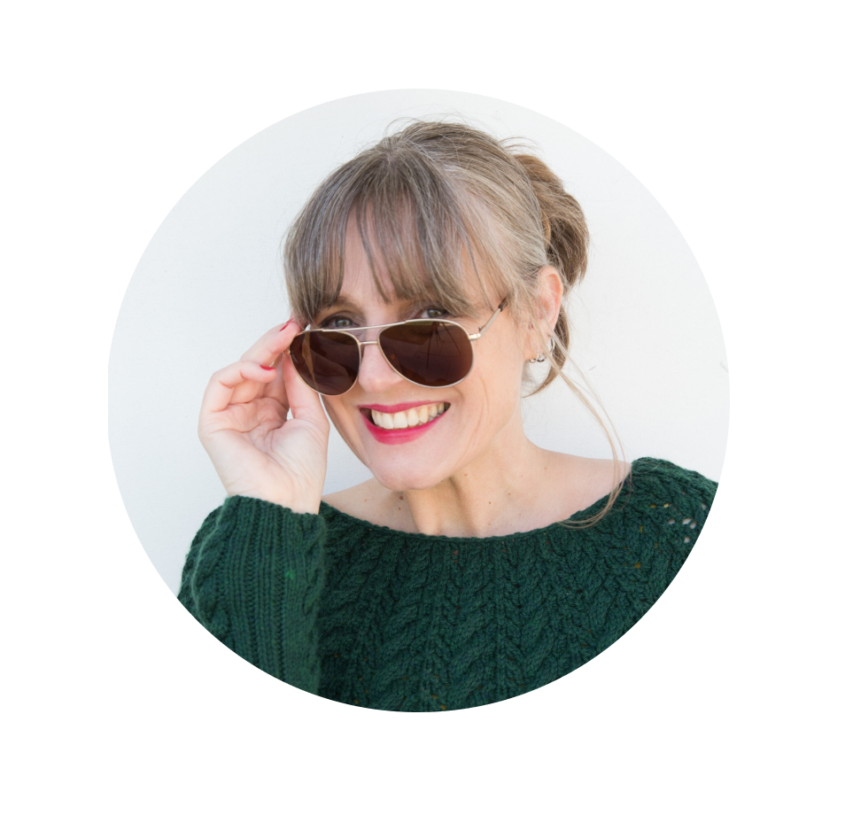
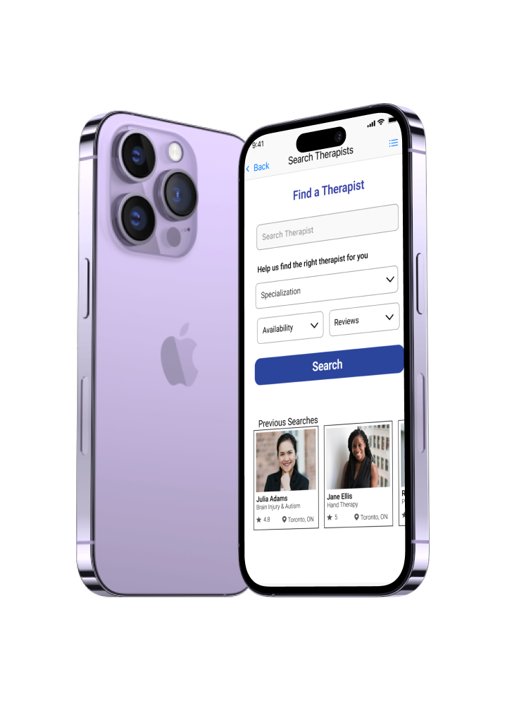
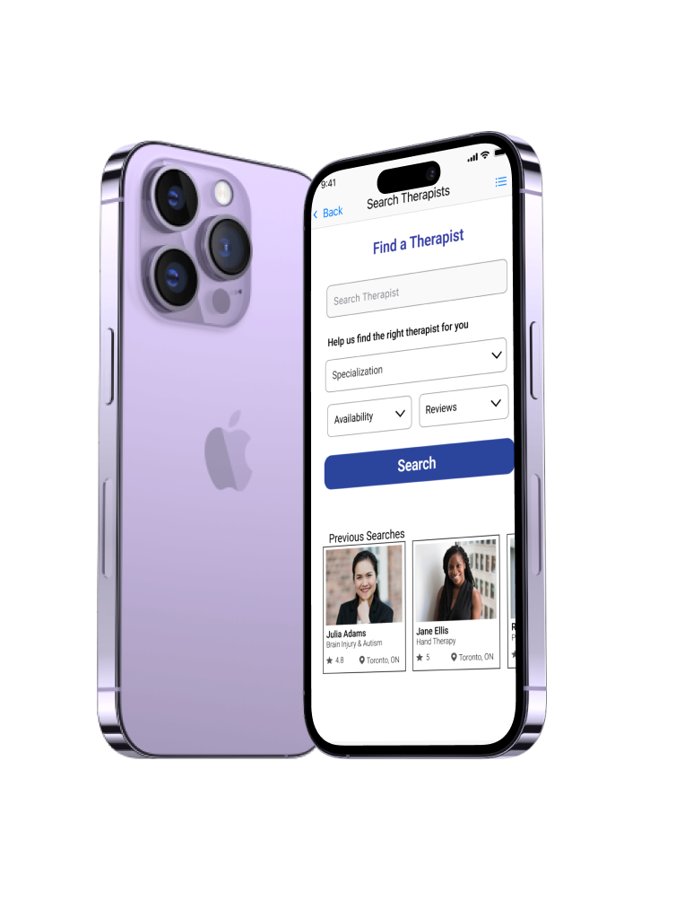

Hi!
I'm Susan David
A UX/UI designer based in Mississauga, Ontario, Canada.
Creating simply designs that are astheically pleasing is the primary goal when designing.
Adapting graphic design skills into UX/UI to create the best user experience possible.
If you're looking for a designer to help bring an idea to life and you're on a tight timeline...
Skills
Design
Design Thinking, Information Architecture, Interaction Design, Prototypes, Usability Testing, Sitemaps, User Flows, Wireframes
Research
Affinity Mapping, Competitive Analysis, UX Research, Journey Mapping, Interviews, Qualitative & Quantitative Data, Surveys
Case Studies

 
